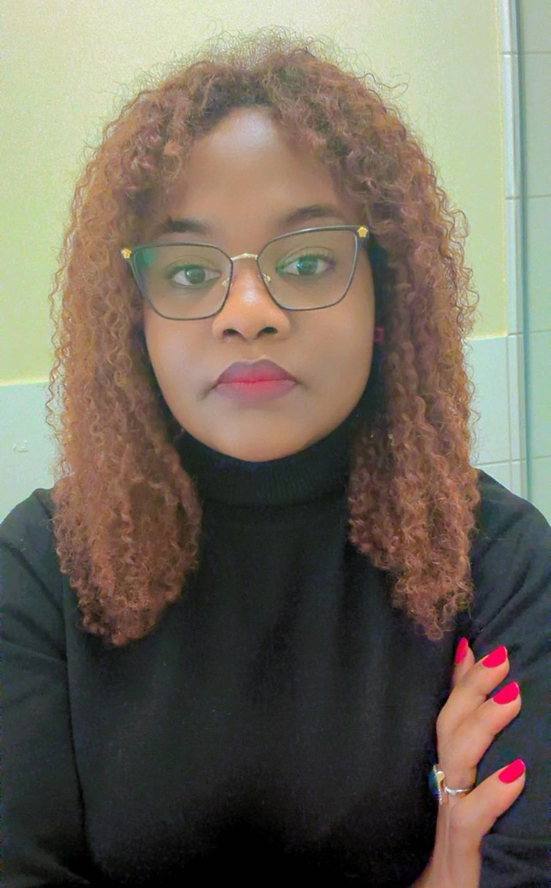
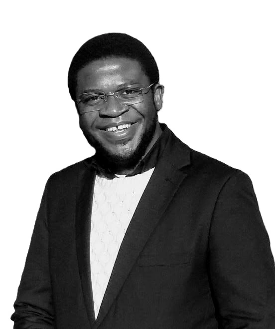
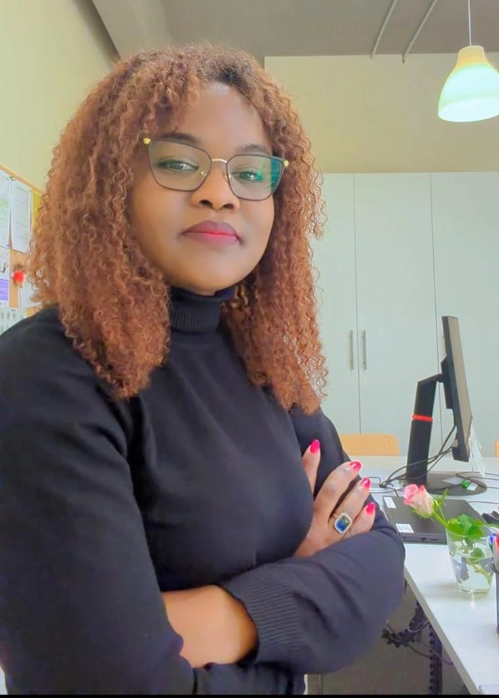

English
English Italiano
Italiano Français
Français Deutsch
Deutsch Español
Español Svenska
Svenska
English Italiano Français Deutsch Español SvenskaSupporting young women and vulnerable communities through education, vocational training and sustainable development.
Soutenir les jeunes femmes et les communautés vulnérables par l'éducation et la formation.
Sostenere giovani donne e comunità vulnerabili attraverso istruzione e formazione.
Unterstützung von Frauen und Gemeinschaften durch Bildung und Ausbildung.
Apoyando a mujeres jóvenes y comunidades vulnerables mediante educación.
Stödjer unga kvinnor och utsatta samhällen genom utbildning.
The VisionBlue NGO is committed to transforming lives by equipping young women, and vulnerable communities with the skills, knowledge, and opportunities they need for a sustainable future. We believe that every person—regardless of background or circumstance—deserves the chance to rise, learn, and grow. Through education, mentoring, and community-driven development initiatives, we break cycles of poverty and create pathways to dignity, resilience, and hope.
L'ONG VisionBlue s'engage à transformer des vies en dotant les jeunes femmes et les communautés vulnérables des compétences, connaissances et opportunités nécessaires pour un avenir durable. Nous croyons que chaque personne – indépendamment de son origine ou de sa situation – mérite la chance de s'élever, d'apprendre et de se développer. Grâce à l'éducation, au mentorat et aux initiatives de développement communautaire, nous brisons les cycles de pauvreté et créons des chemins vers la dignité, la résilience et l'espoir.
L'ONG VisionBlue si impegna a trasformare vite fornendo alle giovani donne e alle comunità vulnerabili le competenze, le conoscenze e le opportunità necessarie per un futuro sostenibile. Crediamo che ogni persona – indipendentemente dal contesto o dalla situazione – meriti la possibilità di crescere, imparare e svilupparsi. Attraverso l'istruzione, il mentoring e iniziative di sviluppo comunitario, rompiamo i cicli di povertà e creiamo percorsi verso dignità, resilienza e speranza.
Die VisionBlue NGO setzt sich dafür ein, Leben nachhaltig zu verändern, indem sie junge Frauen und benachteiligte Gemeinschaften mit den Fähigkeiten, Kenntnissen und Chancen ausstattet, die sie für eine nachhaltige Zukunft benötigen. Wir sind überzeugt, dass jeder Mensch – unabhängig von Herkunft oder Lebensumständen – die Möglichkeit verdient, sich zu entfalten, zu lernen und zu wachsen. Durch Bildung, Mentoring und gemeinschaftsorientierte Entwicklungsinitiativen durchbrechen wir Armutskreisläufe und schaffen Wege zu Würde, Resilienz und Hoffnung.
La ONG VisionBlue se compromete a transformar vidas proporcionando a mujeres jóvenes y comunidades vulnerables las habilidades, conocimientos y oportunidades que necesitan para un futuro sostenible. Creemos que toda persona, independientemente de su origen o circunstancia, merece la oportunidad de crecer, aprender y desarrollarse. A través de la educación, el mentorazgo y las iniciativas de desarrollo comunitario, rompemos los ciclos de pobreza y creamos caminos hacia la dignidad, la resiliencia y la esperanza.
The VisionBlue NGO är engagerad i att förändra liv genom att ge unga kvinnor och utsatta samhällen de färdigheter, kunskaper och möjligheter som behövs för en hållbar framtid. Vi tror att varje individ – oavsett bakgrund eller omständigheter – förtjänar chansen att växa, lära och utvecklas. Genom utbildning, mentorskap och samhällsdrivna utvecklingsinitiativ bryter vi fattigdomscykler och skapar vägar till värdighet, motståndskraft och hopp.
Provision of seed funding and coaching for women entrepreneurs to build sustainable business models.
Regular mentoring sessions, follow-up support, and tailored assistance for our beneficiaries.
Development of practical skills for employment and economic self‑reliance.
Strengthening resilient communities through workshops, awareness campaigns, and local partnerships.
The VisionBlue NGO strengthens communities through education, vocational training, and human‑centered development work.
The VisionBlue NGO was founded with a clear mission: to support young women between the ages of 15 and 25 and communities facing social and economic challenges. Its origins lie in the commitment to create practical and sustainable pathways to empowerment—particularly for young women, and vulnerable groups.
The work of The VisionBlue NGO is grounded in the academic and professional background of its founder, whose commitment spans ethics, community development, and social responsibility. This foundation shapes our evidence‑based, human‑centered approach.
The VisionBlue NGO emerged during a period of significant social and economic strain in Cameroon. Our response focuses on constructive action—through support, training, and opportunities that foster stability, self‑determination, and long‑term resilience.

Founder & Vision Lead

Operations & Strategy

Administration & Coordination
Financial Oversight

Accounts & Reporting

Communications & Media
Analysis and Launch of Business Support
Mentoring & Follow-Up Program
Continuous coaching, Follow-Up Program, School campaigns & workshops.
Back to school programs, packages, picnics, and fun holiday programs.
Expansion to New Communities to deepen impact.